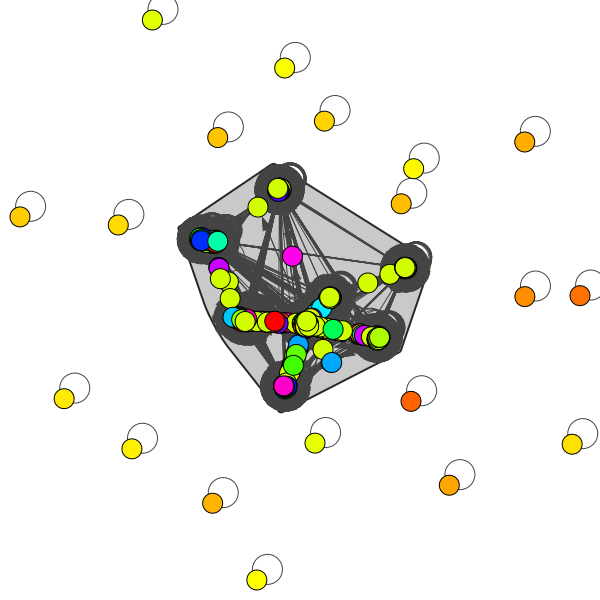

DAA Assignment 1:
Description and Analysis
Divide-and-Conquer Strong Components Algorithm:
This algorithm aims at finding stongly connected components of a directed graph.
Time complexity of this algorithm is O(ElogV+V),where V is number of vertices and E is the number of edges.
Though this Algorithm is not as fast Kosa Raju's oin theory but in modern computer this algorithm can prove to be faster as accomplishes the dificult task of parallelizing DFS.
Our implentation of the algorithm:
1. We used Hash-Maps to store the graph, as the input sets available did not have vertices in sequence.
2. We made a reverse graph to the input graph, which will be used later.
3. We randomly select a vertex from the source vertices of input graph.
4. We perform DFS from the current veterx both on the input graph and its reverse.
5. Now for current iteration we store the visited verctices in the set SCC(strongly connected components)
Time Complexity Analysis:
As we randomly select the vertex for dfs the time complexity of the algorithm is O(ElogV+V).
Kosaraju algorithm:
This algorithm aims at finding stongly connected components of a directed graph.
Time complexity of this algorithm is O(V+E),where V is number of vertices and E is the number of edges.
We find this algorithm to be very simple yet very fast given the task it has to accomplish
Kosaraju using maps
Our implementation of algorithm:
1. Use Hash-Maps to store the graph as the input sets available did not have vertices in sequence.
2. DFS on the graph and storing the vertices on a stack as move through them.
3. Store the reverse of the given graph on rev-graph to implement main part of Kosa Raju.
4. DFS on the the rev-graph from the vertices on the stack. We pop the stack in each iteration.
5. Printing the nodes as we do DFS, identifying the strongly connected components.
Time Complexity Analysis:
We use DFS 2 times to find the strongly connected components.
As while performing DFS we visit each vertex and check each of its edge only once the Time Complexity of it is O(V+E).
So as a result the algorithm also has the same Time Complexity i.e. O(V+E).
Kosaraju using vectors
Our implementation of algorithm:
1. Use array of vectors to store the graph .
2. DFS on the graph and storing the vertices on a stack as move through them.
3. Store the reverse of the given graph on rev-graph to implement main part of Kosa Raju.
4. DFS on the the rev-graph from the vertices on the stack. We pop the stack in each iteration.
5. Printing the nodes as we do DFS, identifying the strongly connected components.
Time Complexity Analysis:
We use DFS 2 times to find the strongly connected components.
As while performing DFS we visit each vertex and check each of its edge only once the Time Complexity of it is O(V+E).
So as a result the algorithm also has the same Time Complexity i.e. O(V+E).
Results : Visualization and output for testcases
{kind=link}


References
https://www.geeksforgeeks.org/strongly-connected-components/
http://lcm.csa.iisc.ernet.in/dsa/node171.html